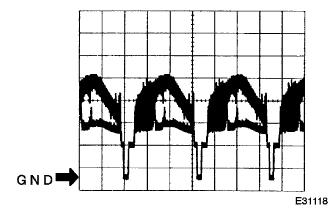
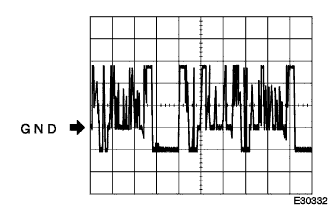
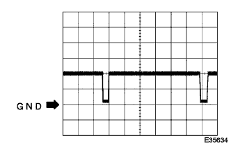
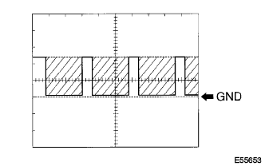

参照)
参照)バックガイドモニターシステム ＥＣＵ端子配列 |
| 端子番号 | 端子記号 | 入出力 | テスター接続 プラス←→マイナス | 項目 | 測定条件 | 基準 | 基準外の場合の不具合症状 O:断線時 S:ボデーと短絡時 |
|---|---|---|---|---|---|---|---|
| 1 | CV- | - | 1←→3 | 導通 | 常時 | 導通あり | バックガイドモニター画面表示せず |
| 2 | CV+ | 出力 | 2←→3 | 波形 | IGスイッチON、シフトレバーRレンジ | 波形1(約0.65V) | バックガイドモニター画面表示せず |
| 3 | CGND | - | 3←→ボデーアース | 導通 | 常時 | 導通あり | バックガイドモニター画面表示せず(黒画面) |
| 4 | CB+ | 入力 | 4←→ボデーアース | 電圧 | IGスイッチON、シフトレバーRレンジ | 5.7V-6.3V | O:バックガイドモニター画面表示せず(黒画面) S:ヒューズ切れ |
|  |
オシロスコープ波形
波形1
| 項目 | 内容 |
|---|---|
| 測定端子 | CV+←→CGND |
| 計器セット | 0.2V/DIV、0.2μS/DIV |
| 測定条件 | イグニッションスイッチON、シフトレバ-Rレンジ |
参照)参照)| 端子番号 | 端子記号 | 入出力 | テスター接続 プラス←→マイナス | 項目 | 測定条件 | 基準 | 基準外の場合の不具合症状 O:断線時 S:ボデーと短絡時 |
|---|---|---|---|---|---|---|---|
| 1 | +B | 入力 | A1←→A8 | 電圧 | 常時 | 10-14V | O:バックガイドモニター作動せず S:ヒューズ切れ |
| 2 | IG | 入力 | A2←→A8 | 電圧 | IGスイッチON | 10-14V | O:バックガイドモニター作動せず S:ヒューズ切れ |
| 3 | AUI- | 入力 | A3←→A9 | 導通 | 常時 | 導通あり | フロント右スピーカから音声がでない |
| 3 | AUI- | 入力 | A3←→A8 | 波形 | ナビ音声出力中 | 音声に同期した波形が出力される | フロント右スピーカから音声がでない |
| 4 | AUI+ | 入力 | A4←→A10 | 導通 | 常時 | 導通あり | フロント右スピーカから音声がでない |
| 4 | AUI+ | 入力 | A4←→A8 | 波形 | ナビ音声出力中 | 音声に同期した波形が出力される | フロント右スピーカから音声がでない |
| 5 | ACC | 入力 | A5←→A8 | 電圧 | IGスイッチACCまたはON | 10-14V | O:バックガイドモニター作動せず S:ヒューズ切れ |
| 8 | GND1 | - | A8←→ボデーアース | 導通 | 常時 | 導通あり | バックガイドモニター作動せず |
| 9 | AUO- | 出力 | A9←→A3 | 導通 | 常時 | 導通あり | フロント右スピーカから音声がでない |
| 9 | AUO- | 出力 | A9←→A8 | 波形 | 音声出力中 | 音声に同期した波形が出力される | フロント右スピーカから音声がでない |
| 10 | AUO+ | 出力 | A10←→A4 | 導通 | 常時 | 導通あり | フロント右スピーカから音声がでない |
| 10 | AUO+ | 出力 | A10←→A8 | 波形 | 音声出力中 | 音声に同期した波形が出力される | フロント右スピーカから音声がでない |
| 端子番号 | 端子記号 | 入出力 | テスター接続 プラス←→マイナス | 項目 | 測定条件 | 基準 | 基準外の場合の不具合症状 O:断線時 S:ボデーと短絡時 |
|---|---|---|---|---|---|---|---|
| 1 | SS2- | 入力 | B1←→A8 | 電圧 | IGスイッチON | 約2.5V | バックガイドモニター作動せず |
| 2 | SS2+ | 入力 | B2←→A8 | 電圧 | IGスイッチON | 約2.5V | バックガイドモニター作動せず |
| 2 | SS2+ | 入力 | B2←→B1 | 波形 | IGスイッチON | 波形4 | バックガイドモニター作動せず |
| 5 | SPD | 入力 | B5←→A8 | 電圧 | 時速3km/ｈ以上で走行する | 9←→1V以下を繰り返す | - |
| 9 | VG | - | B9←→A8 | 導通 | 常時 | 導通あり | 正常(画面ノイズ微増) |
| 10 | R | 出力 | B10←→A8 | 波形 | 地図またはバックモニター画面出画中 | 波形2 | 地図またはバックモニタ-画面が水色がかる |
| 11 | G | 出力 | B11←→A8 | 波形 | 地図またはバックモニター画面出画中 | 波形2 | 地図またはバックモニタ-画面が紫色がかる |
| 12 | B | 出力 | B12←→A8 | 波形 | 地図またはバックモニター画面出画中 | 波形2 | 地図またはバックモニタ-画面が黄色がかる |
| 13 | B1 | 入力 | B13←→A8 | 波形 | 地図画面出画中 | 波形2 | 地図画面が黄色がかる |
| 14 | G1 | 入力 | B14←→A8 | 波形 | 地図画面出画中 | 波形2 | 地図画面が紫色がかる |
| 15 | R1 | 入力 | B15←→A8 | 波形 | 地図画面出画中 | 波形2 | 地図画面が水色がかる |
| 16 | ＶＧ1 | - | B15←→A8 | 波形 | 地図画面出画中 | 波形2 | 正常(画面ノイズ微増) |
| 19 | CGND | - | B19←→A8 | 導通 | 常時 | 導通あり | バックガイドモニター作動せず |
| 20 | CB+ | 出力 | B20←→A8 | 電圧 | IGスイッチON、シフトレバーRレンジ | 5.7-6.3V | O:バックガイドモニター作動せず S:ヒューズ切れ |
| 21 | AＵGO | - | B21←→A8 | 導通 | 常時 | 導通あり | 正常(案内音声ノイズ微増) |
| 22 | TRIG | 入力 | B22←→A8 | 電圧 | IGスイッチON | 約5V | [システム初期化中]の表示あり |
| 27 | REV | 入力 | B27←→A8 | 電圧 | IGスイッチON、シフトレバーRレンジ | 10-14V | 画面表示せず |
| 29 | TX+ | 入出力 | - | - | サービス検査(ワイドマルチAVステーションシステム) | - | O:バックガイドモニター作動せず S:ワイドマルチAVステーションシステム作動せず |
| 30 | TX- | 入出力 | - | - | サービス検査(ワイドマルチAVステーションシステム) | - | O:バックガイドモニター作動せず S:ワイドマルチAVステーションシステム作動せず |
| 31 | SYNC | 入出力 | B31←→A8 | 波形 | 地図またはバックモニター画面出画中 | 波形3 | O:画面同期乱れ激しい S:画面同期乱れゆっくり |
| 32 | VR | - | B32←→A8 | 導通 | 常時 | 導通あり | 正常(画面ノイズ微増) |
| 33 | VR1 | - | B33←→A8 | 導通 | 常時 | 導通あり | 正常(画面ノイズ微増) |
| 34 | SYN1 | 入力 | B34←→A8 | 波形 | 地図画面出画中 | 波形3 | O:画面同期乱れ激しい S:画面同期乱れゆっくり |
| 35 | TX1- | 入出力 | - | - | サービス検査(ワイドマルチAVステーションシステム) | - | O:ナビ作動せず S:ワイドマルチAVステーションシステム作動せず |
| 36 | TX1+ | 入出力 | - | - | サービス検査(ワイドマルチAVステーションシステム) | - | O:ナビ作動せず S:ワイドマルチAVステーションシステム作動せず |
| 39 | CV- | 入力 | B39←→A8 | 導通 | 常時 | 導通あり | 画面表示せず |
| 40 | CV+ | 入力 | B40←→A8 | 波形 | IGスイッチON、シフトレバーRレンジ | 波形1 | 画面表示せず |
オシロスコープ画面
波形1
| 項目 | 内容 |
|---|---|
| 測定端子 | CV+←→GND1 |
| 計器セット | 0.2V/DIV、0.2μS/DIV |
| 測定条件 | IGスイッチON、シフトレバーRレンジ |
|  |
波形2
| 項目 | 内容 |
|---|---|
| 測定端子 |
|
| 計器セット | 200ｍV/DIV、10μS/DIV |
| 測定条件 | 画面出画中(バックガイドモニターまたはナビ) |
|  |
波形3
| 項目 | 内容 |
|---|---|
| 測定端子 |
|
| 計器セット | 500mV/DIV、10μS/DIV |
| 測定条件 | 画面出画中(バックガイドモニターまたはナビ) |
|  |
波形4
| 項目 | 内容 |
|---|---|
| 測定端子 | SS2+←→SS2- |
| 計器セット | 2V/DIV、1μS/DIV |
| 測定条件 | IGスイッチON |